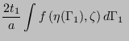

Keyword type: step
This option allows the specification of film heat transfer. This is
convective heat transfer of a surface at temperature  and with film
coefficient  to the environment at temperature
to the environment at temperature  . The
environmental temperature
. The
environmental temperature  is also called the sink
temperature. The convective heat flux
is also called the sink
temperature. The convective heat flux  satisfies:
satisfies:
| (473) |
In order to specify which face the flux is entering or leaving the faces are numbered. The numbering depends on the element type.
For hexahedral elements the faces are numbered as follows (numbers are node numbers):
for tetrahedral elements:
for quadrilateral plane stress, plane strain and axisymmetric elements:
for triangular plane stress, plane strain and axisymmetric elements:
for quadrilateral shell elements:
for triangular shell elements:
for beam elements:
Film flux characterized by a uniform film coefficient is entered by the distributed flux type label Fx where x is the number of the face, followed by the sink temperature and the film coefficient. If the film coefficient is nonuniform the label takes the form FxNUy and a user subroutine film.f must be provided specifying the value of the film coefficient and the sink temperature. The label can be up to 20 characters long. In particular, y can be used to distinguish different nonuniform film coefficient patterns (maximum 16 characters).
In case the element face is adjacent to a moving fluid the temperature of which is also unknown (forced convection), the distributed flux type label is FxFC where x is the number of the face. It is followed by the fluid node number it exchanges convective heat with and the film coefficient. To define a nonuniform film coefficient the label FxFCNUy must be used and a subroutine film.f defining the film coefficient be provided. The label can be up to 20 characters long. In particular, y can be used to distinguish different nonuniform film coefficient patterns (maximum 14 characters).
Optional parameters are OP, AMPLITUDE, TIME DELAY, FILM AMPLITUDE and FILM TIME DELAY. OP takes the value NEW or MOD. OP=MOD is default and implies that the film fluxes on different faces are kept over all steps starting from the last perturbation step. Specifying a film flux on a face for which such a flux was defined in a previous step replaces this value. OP=NEW implies that all previous film flux is removed. If multiple *FILM cards are present in a step this parameter takes effect for the first *FILM card only.
The AMPLITUDE parameter allows for the specification of an amplitude by which the sink temperature is scaled (mainly used for dynamic calculations). Thus, in that case the sink temperature values entered on the *FILM card are interpreted as reference values to be multiplied with the (time dependent) amplitude value to obtain the actual value. At the end of the step the reference value is replaced by the actual value at that time. In subsequent steps this value is kept constant unless it is explicitly redefined or the amplitude is defined using TIME=TOTAL TIME in which case the amplitude keeps its validity. The AMPLITUDE parameter has no effect on nonuniform and forced convective fluxes.
The TIME DELAY parameter modifies the AMPLITUDE parameter. As such, TIME DELAY must be preceded by an AMPLITUDE name. TIME DELAY is a time shift by which the AMPLITUDE definition it refers to is moved in positive time direction. For instance, a TIME DELAY of 10 means that for time t the amplitude is taken which applies to time t-10. The TIME DELAY parameter must only appear once on one and the same keyword card.
The FILM AMPLITUDE parameter allows for the specification of an amplitude by which the film coefficient is scaled (mainly used for dynamic calculations). Thus, in that case the film coefficient values entered on the *FILM card are interpreted as reference values to be multiplied with the (time dependent) amplitude value to obtain the actual value. At the end of the step the reference value is replaced by the actual value at that time, for use in subsequent steps. The FILM AMPLITUDE parameter has no effect on nonuniform fluxes.
The FILM TIME DELAY parameter modifies the FILM AMPLITUDE parameter. As such, FILM TIME DELAY must be preceded by an FILM AMPLITUDE name. FILM TIME DELAY is a time shift by which the FILM AMPLITUDE definition it refers to is moved in positive time direction. For instance, a FILM TIME DELAY of 10 means that for time t the amplitude is taken which applies to time t-10. The FILM TIME DELAY parameter must only appear once on one and the same keyword card.
Notice that in case an element set is used on any line following *FILM this set should not contain elements from more than one of the following groups: {plane stress, plane strain, axisymmetric elements}, {beams, trusses}, {shells, membranes}, {volumetric elements}.
In order to apply film conditions to a surface the element set label underneath may be replaced by a surface name. In that case the ``x'' in the flux type label takes the value zero.
If more than one *FILM card occurs in the input deck the following rules apply: if the *FILM is applied to the same node and the same face as in a previous application then the prevous value and previous amplitude (including film amplitude) are replaced.
First line:
Following line for uniform, explicit film conditions:
Following line for nonuniform, explicit film conditions:
Following line for forced convection with uniform film conditions:
Following line for forced convection with nonuniform film conditions:
Example: *FILM 20,F1,273.,.1
assigns a film flux to face 1 of element 20 with a film coefficient of 0.1 and a sink temperature of 273.
Example files: oneel20fi.